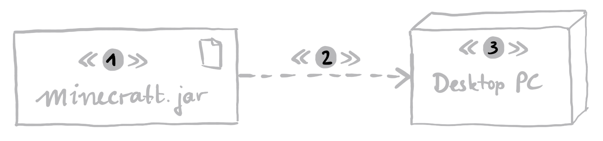

Question 1
What does it mean when we speak about “degrees” of UML?
- Everything is a model, also code, so talking about “degrees of UML” is not really helpful.
- UML can be used in an informal way, for instance when sketching something on a whiteboard.
- To be valuable, models need to be detailed and formal.
- Using “UML as a Blueprint” means to automatically generate code from the UML models.
Question 2
About modeling in general, which one of the following statements is true?
- A model is a detailed digital representation of the reality.
- UML only describes a notation for models.
- A diagram is like a window into a model.
- A modeling language must be graphical, otherwise it does not serve its purpose.
Question 3
Which of the following statements on models and code is false?
- UML is so expressive that it corresponds to code.
- Code is also a model, but only describes the implementation of the software.
- Code does not tell you how the software is to be used or by whom.
- To understand a system that is only described by code, you have to understand the code.
Question 4
What are the reasons to invest time into preparing a system model, for instance in UML?
- Testing will be practically unnecessary.
- Since UML is precise, the implementation comes automatically.
- In many development processes, modeling is a mandatory activity.
- All project participants can gain a better understanding.
Question 5
What do deployment diagrams show?
- The logical elements of the system.
- How software is assigned to hardware.
- How the pieces of the system communicate.
- Both how software is assigned to hardware and how the pieces of the system communicate.
Question 6
Which of the following statements is true:
- artifacts cannot represent executable files
- nodes cannot represent execution environments
- devices cannot model an application server
- artifacts cannot represent library files
Question 7
Which stereotypes fits best into the picture (at their respective placeholders)?
- artifact, (2) manifest, (3) device
- artifact, (2) deploy, (3) device
- device, (2) deploy, (3) artifact
- deploy, (2) artifact, (3) device

Question 8
What should a deployment diagram show?
- The more complete a deployment diagram is, the more useful it is during the actual deployment.
- Some details always remain hidden.
- It is important to only show relevant details of a system.
- A deployment diagram should be complete.
Question 9
Which relationship or connection between two elements can also be represented by nesting, i.e., by drawing one node into another one?
- communication
- manifest
- dependency between two artifacts
- deploy
Question 10
Deployment diagrams…
- Are useful at all stages of development.
- Are useful at all later stages of development.
- Are useful during system deployment.
- Are useful during the system implementation.